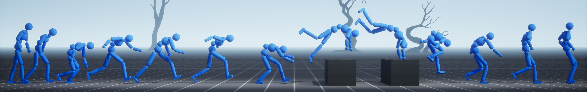

Ziyu Zhang* (1)Sergey Bashkirov* (2)Dun Yang (1)Michael Taylor (2)Xue Bin Peng (1,3)
(1) Simon Fraser University(2) Sony Playstation(3) NVIDIA
*Joint first authors.

Abstract
Multi-objective optimization problems, which require the simultaneous optimization
of multiple objectives, are prevalent across numerous applications. Existing
multi-objective optimization methods often rely on manually-tuned aggregation
functions to formulate a joint optimization objective. The performance of such
hand-tuned methods is heavily dependent on careful weight selection, a
time-consuming and laborious process. These limitations also arise in the setting
of reinforcement-learning-based motion tracking methods for physically simulated
characters, where intricately crafted reward functions are typically used to achieve
high-fidelity results. Such solutions not only require domain expertise and
significant manual tuning, but also limit the applicability of the resulting reward
function across diverse skills. To bridge this gap, we present a novel adversarial
multi-objective optimization technique that is broadly applicable to a range of
multi-objective reinforcement-learning tasks, including motion tracking. Our proposed
Adversarial Differential Discriminator (ADD) receives a single positive sample, yet
is still effective at guiding the optimization process. We demonstrate that our
technique can enable characters to closely replicate a variety of acrobatic and agile
behaviors, achieving comparable quality to state-of-the-art motion-tracking methods,
without relying on manually-designed reward functions.
@inproceedings{
zhang2025ADD,
author={Zhang, Ziyu and Bashkirov, Sergey and Yang, Dun and Shi, Yi and Taylor, Michael and Peng, Xue Bin},
title = {Physics-Based Motion Imitation with Adversarial Differential Discriminators},
year = {2025},
booktitle = {SIGGRAPH Asia 2025 Conference Papers (SIGGRAPH Asia '25 Conference Papers)}
}